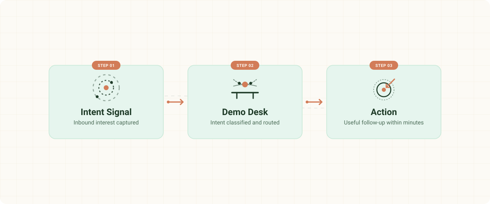

Hot lead
Booked or requested a call after the demo experience.
Action: confirm immediately.
95% confidenceThe leak isn't the demo — it's the silence after it. Demo Desk reads every intent signal and sends one right next step: confirm, recover, nurture, escalate, or close.

Most teams obsess over getting prospects into a demo. Demo Desk owns what happens immediately after interest is shown — while the signal is fresh and the next action still matters.
The warmest people in your funnel are the ones who already raised a hand — and nobody routes the follow-up. The leverage isn't another blast.
Every interested prospect gets the same generic "thanks for watching," or nothing at all because the team is afraid of spamming the wrong people.
Each event is classified by signal quality, language, vertical, timing, and source. One useful next step — or a refusal when the data is incomplete.
Sales time shifts from guessing to handling the right handoffs: booked calls, abandoned demos, repeat visitors, and high-confidence escalations.
Deliberately narrow. It reads the intent signal, picks the route, sends or suppresses the matching follow-up, and records the handoff.
Booked or requested a call after the demo experience.
Action: confirm immediately.
95% confidenceExited midway, before the value landed.
Action: ask what broke; offer a short clarify.
65% confidenceCompleted or engaged deeply without booking.
Action: start a 3-day vertical nurture.
65% confidenceReturned to the demo or pricing 2+ times, fast.
Action: escalate to a human specialist.
95% confidenceCompetitor or non-buyer research signal.
Action: polite close, no chase.
95% confidenceMissing prospect name, business context, timestamp, source, or outcome signal? Demo Desk returns an error instead of inventing intent. That one refusal is what keeps it from becoming another spray-and-pray engine.
The proof pack covers every path: a Rule 0 failure, Spanish routing, timeout escalation, repeat-visitor escalation, and a high-volume batch.
A short walkthrough of the problem, the signal, and the routing logic behind Demo Desk.
60–75 seconds: the problem, the insight, live routing, proof, and close.
Watch walkthrough Open on YouTubeEverything supports the same operator loop: define the role, classify the signal, choose the message, and verify the route.
Mission, constraints, and the belief that warm intent deserves disciplined handling.
Five paths, confidence scoring, language routing, and stale-event handling.
English + Spanish, tuned by segment — PLG signups, sales-led demos, and enterprise evals.
Adversarial events show it rejecting bad data and routing high intent.
Name, business type, language, source, timestamp, and outcome signal are passed in.
If event data is incomplete, Demo Desk returns an error and sends nothing.
Signal, source, vertical, language, and timing decide the template and confidence.
back_to is set to null, escalate-human, or nurture-sequence so the next owner is explicit.
That's the point. Messy intent behavior becomes a crisp routing decision a sales team can trust.
path: 4
reason: repeat visitor, 3 views, rising engagement
confidence: 95%
message: specialist escalation
back_to: escalate-human
sla: contact within 4 hours
Demo Desk reads prospect intent and decides the next useful action. No spray-and-pray. No guessing. No unnecessary outreach.